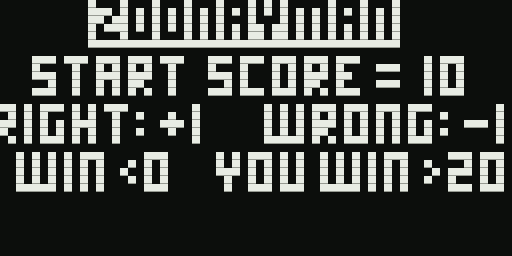
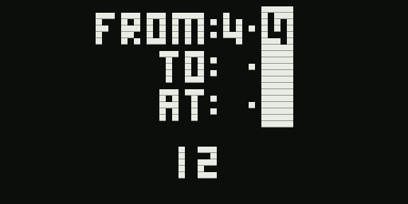
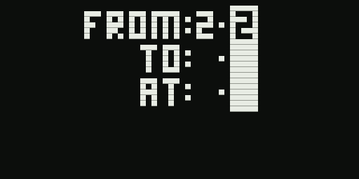

Zoonayman
Lindsay B. Ford · DREAMER no. 11 (1981-07) p. 8 2K RAM



A pattern-recognition game: the DREAM throws 50 dice and secretly changes some by a non-random rule. After a viewing time you say which value changed, to what, and where on the screen. Score goes up one for a right answer and down one for a wrong one, with a win at 20 and a loss at 0; a two-player add-on lets a friend set the change instead.
Keys
FROM 1-6, TO 1-6, AT 1-5; any key except F ends the viewing time; two player: 1 = one player, 2 = second player enters the change.
Files
| File | Version | Load | Run |
|---|---|---|---|
| Zoonayman.d68 | main | 0080-03F9 | C000 |
| Zoonayman (Two Player).d68 | two player | 0080-04F6 | C000 |
Listing as transcribed (with notes): zoonayman.txt, zoonayman_two_player.txt
Source
DREAMER no. 11 on archive.org, p. 8 (PDF page 10). Author: Lindsay B. Ford.
Corrections applied
- Two player version: 0206 = 13FA hook plus the add-on rows 03FA-04F6.
Open doubts
- 0306 = EF9F is printed clearly and is flagged by the checker, but CHIPOS accepts it; kept.
- 03F4 read as 12C6.